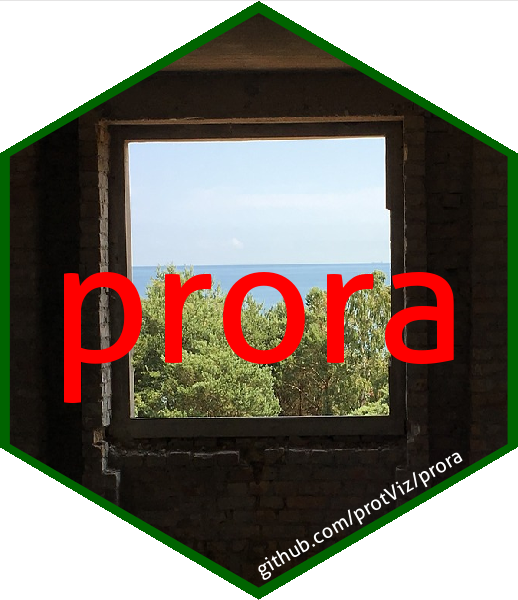

prora an R package for proteomics over representation analysis (ORA) and gene set enrichment analysis (GSEA)

For the prora package documentation visit https://protviz.github.io/prora/.
A plethora of R packages exist on CRAN and Bioconductor to perform over-representation analysis (ORA) and gene set enrichment analysis (GSEA). However, consistency in the underlying nomenclature for specific analyses and user friendly implementation is still lacking. prora aims at unifying ID mapping and enrichment analysis in a syntactically coherent and intuitive way, while ensuring reproducibility of results. prora primarily consists of wrapper functions around the r BiocStyle::CRANpkg("sigora"), r BiocStyle::CRANpkg("WebGestaltR") and r BiocStyle::Biocpkg("fgsea") packages from CRAN and Bioconductor and r BiocStyle::CRANpkg("rmarkdown") based reports for visualisation and contextualisation of analysis results.
To install the package in R run the following code:
install.packages("remotes")
remotes::install_github("protViz/prora")PS > Rscript <fgczgseaora_path>\run_scripts\lfq_2grp_webgestalt_ora.R --help
WebGestaltR ORA
Usage:
test.R <grp2file> [--organism=<organism>] [--outdir=<outdir>] [--log2fc=<log2fc>] [--is_greater=<is_greater>] [--nperm=<nperm>] [--ID_col=<ID_col>] [--fc_col=<fc_col>]
Options:
-o --organism=<organism> organism [default: hsapiens]
-r --outdir=<outdir> output directory [default: results_ora]
-t --log2fc=<log2fc> fc threshold [default: 1]
-g --is_greater=<is_greater> is greater than log2fc [default: TRUE]
-n --nperm=<nperm> number of permutations to calculate enrichment scores [default: 50]
-i --ID_col=<ID_col> Column containing the UniprotIDs [default: TopProteinName]
-f --fc_col=<fc_col> Column containing the estimates [default: log2FC]
Arguments:
grp2file input file
PS D:\Dropbox\DataAnalysis\fgczgseaora_Test_SRMService_Integration>Ora analysis for foldchanges greater and smaller than 1.
Rscript <fgczgseaora_path>\run_scripts\lfq_2grp_webgestalt_ora.R .\data\2Grp_CF_a_vs_CF_b.txt --log2fc=1 --is_greater=TRUE
Rscript <fgczgseaora_path>\run_scripts\lfq_2grp_webgestalt_ora.R .\data\2Grp_CF_a_vs_CF_b.txt --log2fc=1 --is_greater=FALSE
PS > Rscript <fgczgseaora_path>\run_scripts\lfq_2grp_webgestalt_gsea.R --help
WebGestaltR GSEA
Usage:
test.R <grp2file> [--organism=<organism>] [--outdir=<outdir>] [--nperm=<nperm>] [--ID_col=<ID_col>] [--fc_col=<fc_col>]
Options:
-o --organism=<organism> organism [default: hsapiens]
-r --outdir=<outdir> output directory [default: results_gsea]
-n --nperm=<nperm> number of permutations to calculate enrichment scores [default: 50]
-i --ID_col=<ID_col> Column containing the UniprotIDs [default: TopProteinName]
-f --fc_col=<fc_col> Column containing the estimates [default: log2FC]
Arguments:
grp2file input file
PS D:\Dropbox\DataAnalysis\fgczgseaora_Test_SRMService_Integration>PS > Rscript <fgczgseaora_path>\run_scripts\lfq_2grp_webgestalt_gsea.R .\data\2Grp_CF_a_vs_CF_b.txtTo simplify executing the scripts you can add <fgczgseaora_path>\win to the path variable on windows and than execute:
PS > lfq_2grp_webgestalt_gsea.bat --helpor ad <fgczgseaora_path>\run_scripts to the path on linux and execute
lfq_2grp_webgestalt_gsea.R --help